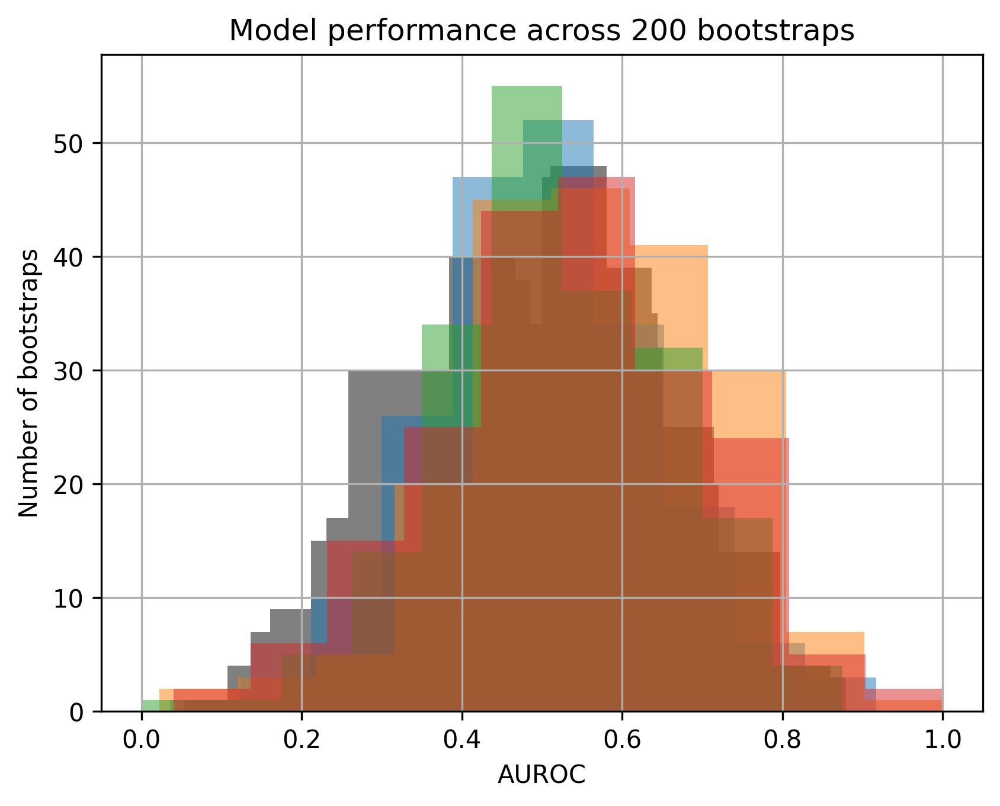
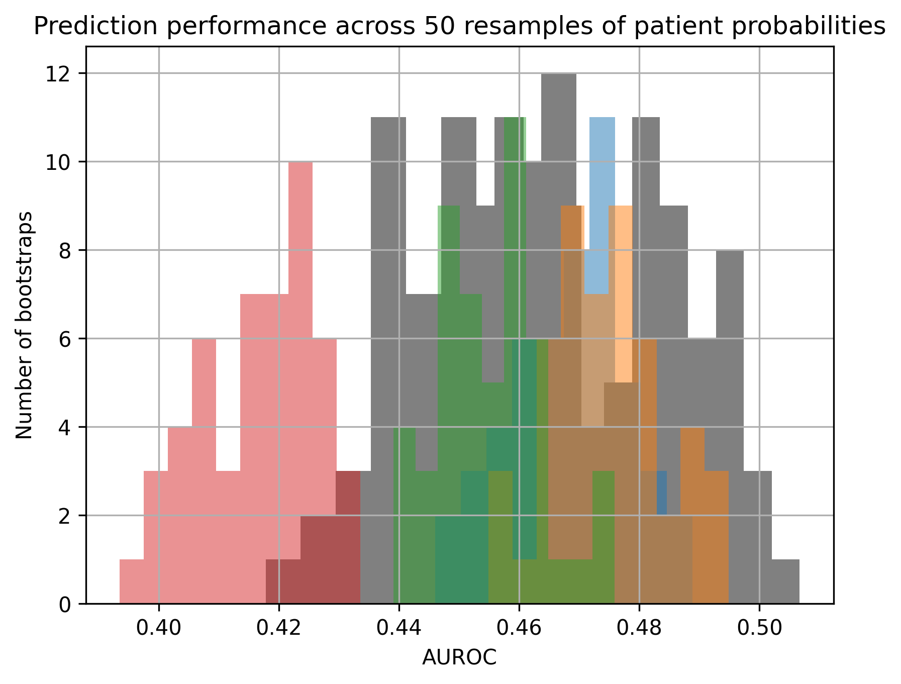

import matplotlib.pyplot as pltfig,ax = plt.subplots(dpi=300)mccv_obj.mccv_permuted_data['Model Learning'].groupby(['model'])['validation_roc_auc'].hist(ax=ax,color='gray')mccv_obj.mccv_data['Model Learning'].groupby(['model'])['validation_roc_auc'].hist(ax=ax,alpha=0.5)ax.set_xlabel('AUROC')ax.set_ylabel('Number of bootstraps')ax.set_title('Model performance across '+str(nboot)+' bootstraps')
Text(0.5, 1.0, 'Model performance across 200 bootstraps')

Code
fig,ax = plt.subplots(dpi=300)mccv_obj.mccv_permuted_data['Performance'].groupby(['model'])['value'].hist(ax=ax,color='gray')mccv_obj.mccv_data['Performance'].groupby(['model'])['value'].hist(ax=ax,alpha=0.5)ax.set_xlabel('AUROC')ax.set_ylabel('Number of bootstraps')ax.set_title('Prediction performance across 50 resamples of patient probabilities')
Text(0.5, 1.0, 'Prediction performance across 50 resamples of patient probabilities')

Code
fig,ax = plt.subplots(dpi=300)mccv_obj.mccv_data['Feature Importance'].groupby(['model'])['importance'].hist(ax=ax)mccv_obj.mccv_permuted_data['Feature Importance'].groupby(['model'])['importance'].hist(ax=ax)ax.set_xlabel('Biomarker importance')ax.set_ylabel('Number of bootstraps')ax.set_title('Biomarker permuted importance across '+str(nboot)+' bootstraps')
Text(0.5, 1.0, 'Biomarker permuted importance across 200 bootstraps')